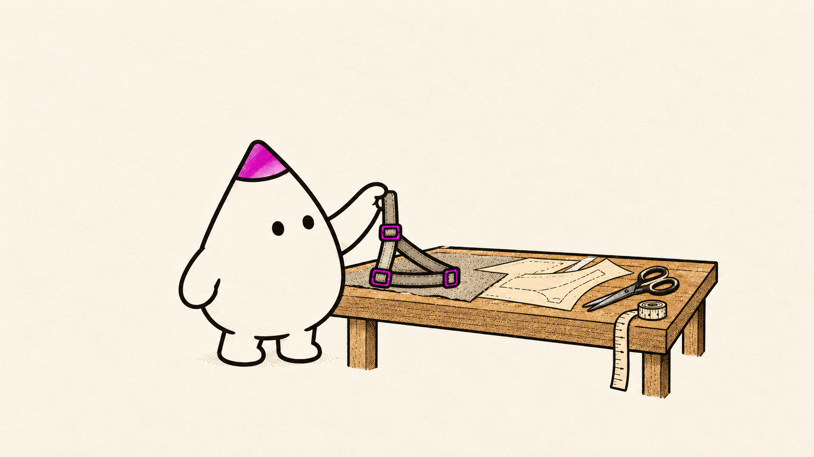
CTO and Chief AI Officer. We help companies use AI to do real work.
A toy car that Claude drives. JyotishBench. Lots of small apps.
I speak at meetups, and host some of them here at Coditas. Like this one.
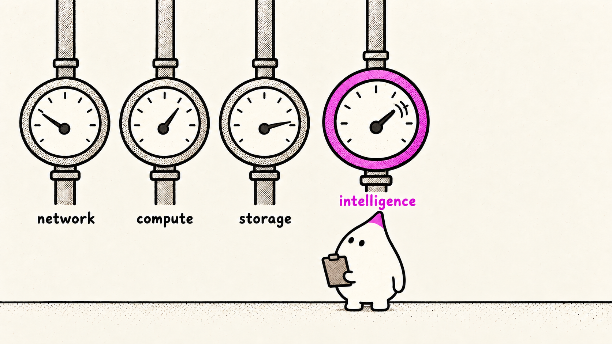
| Thing | What manages it | What it does for us |
|---|---|---|
| Network | The network stack | retries, limits, routing |
| Compute | Kubernetes | starts and scales servers |
| Storage | The database | indexes, caching, backups |
| Intelligence | The harness | context, tools, checks, limits |
Same question. Different answer.
A wrong answer sounds just like a right one.
Every step costs money and time.
It knows the internet. Not your business.
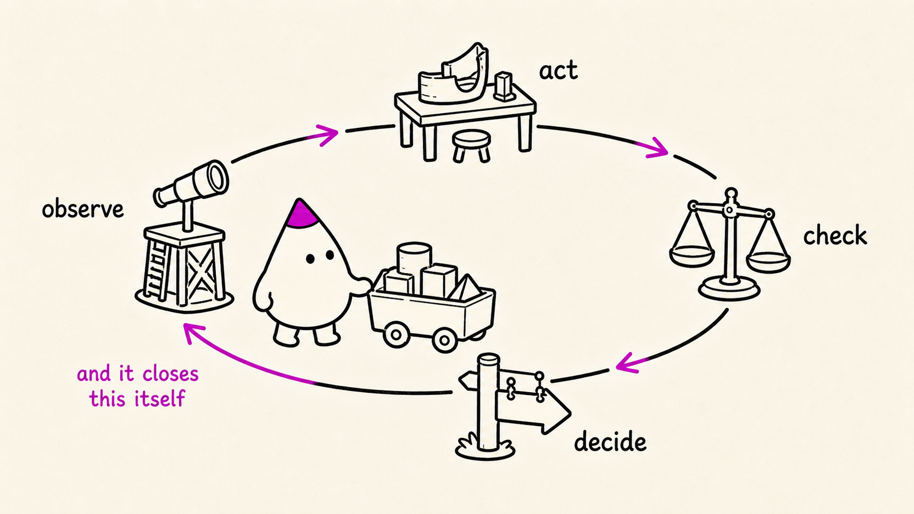
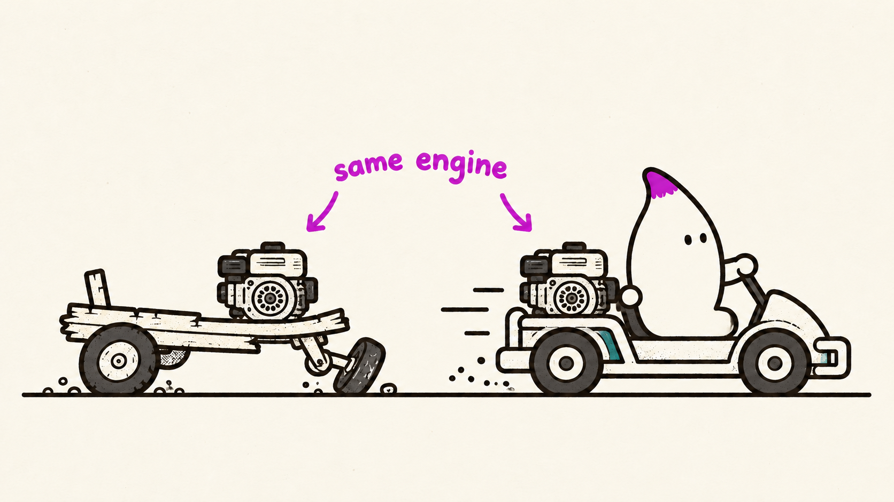
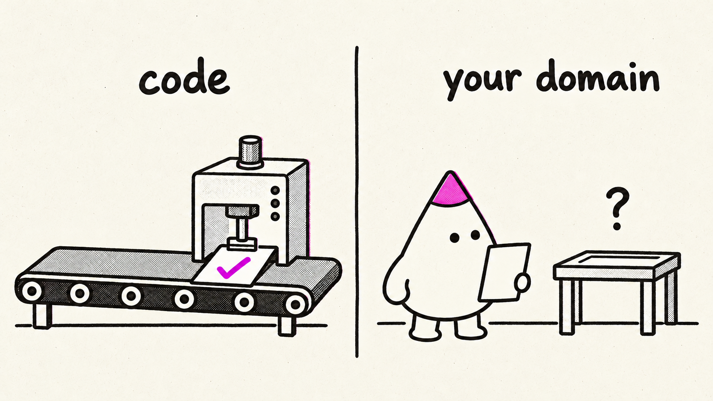
| General · Claude Code, Codex | Built for your field | |
|---|---|---|
| What it sees | files, the web | your data, already worked out |
| What it can do | read, edit, run commands | the actions your experts take |
| How it knows it’s done | the tests pass | checks your experts wrote |
| Rules | asks you for permission | your rules, written in code |
| How it improves | a notes file | every fix becomes a test |
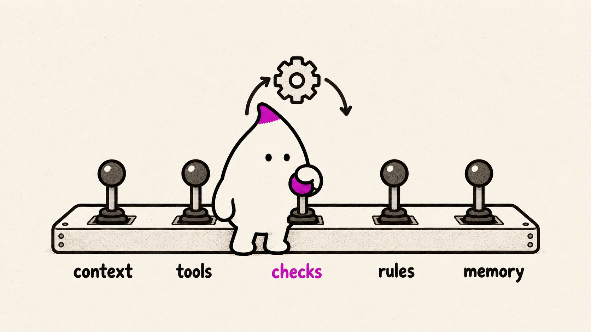
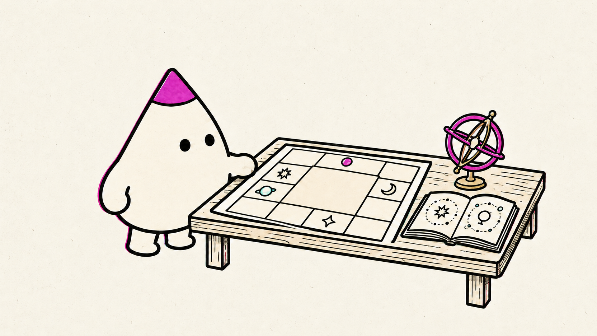
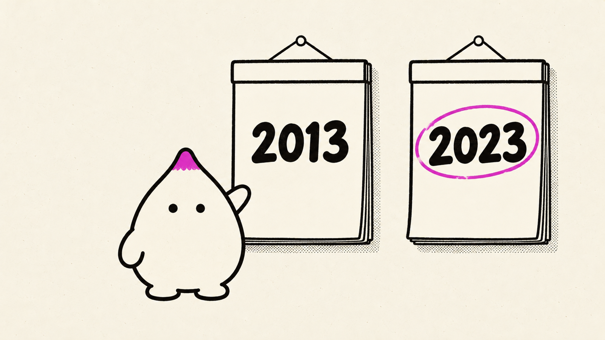
his money houses, and who rules themthe same, read again from the Moonwhen a money period meets a triggerhow strong his money planets are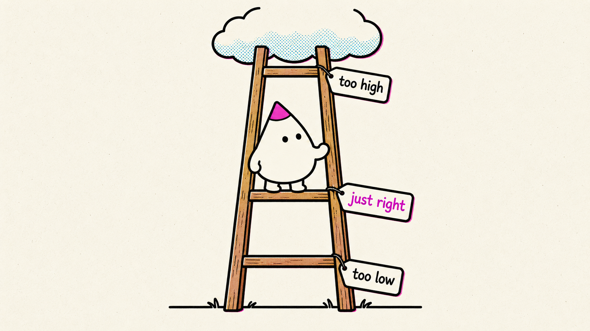
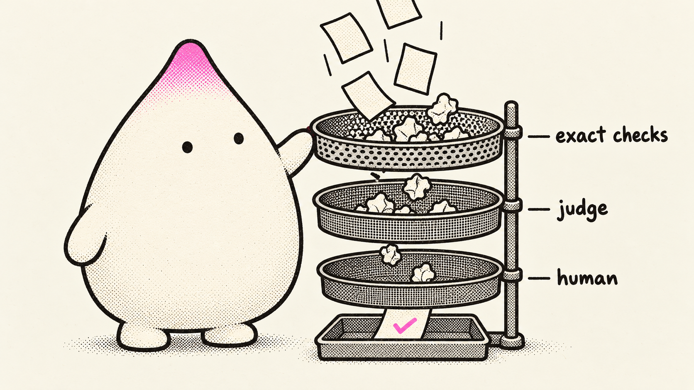
| The rule | Where it’s written | Who checks it |
|---|---|---|
| Use only the chart facts. Never work out a date. | The expert AI’s instructions | Code. No date tool called? The expert is sent back. |
| No promises. No diagnosis. Nothing about death. | The expert AI’s instructions | AI reviewer. If broken, the answer is rewritten. |
| No jargon for the person asking. | The plain-words AI’s instructions | Code, with a word list. Always rewritten. |
| Say nothing the expert didn’t say. | Built in: the plain-words AI never sees the chart | AI reviewer. If broken, the answer is rewritten. |
| Jun 2027 – Nov 2028 | A real step up in base income. A raise, not a windfall. |
| Jun 2029 – Feb 2031 | The best time to save. Put money away. |
| Jan 2033 – Jan 2034 | The year that stands out most. Many signals line up. |
| 2041 – 2043 | Later, but possibly the largest of all. |
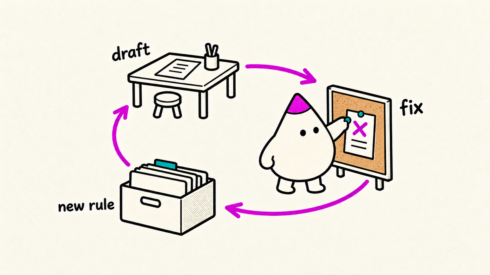
| Model | Overall | Relationships | Health | Career | Money |
|---|---|---|---|---|---|
| GPT-6 Astra | 86.6 | 93.2 | 69.9 | 92.2 | 90.9 |
| Grok 4.7 | 85.6 | 91.3 | 70.4 | 92.5 | 88.2 |
| GPT-5.6 Terra | 85.1 | 92.6 | 67.9 | 91.1 | 88.6 |
| Claude Opus 5.5 | 83.0 | 93.0 | 64.5 | 89.5 | 84.9 |
| Kimi K3 | 81.4 | 92.0 | 60.8 | 88.5 | 84.3 |
| MiniMax M3 | 71.0 | 75.4 | 53.4 | 83.5 | 71.6 |
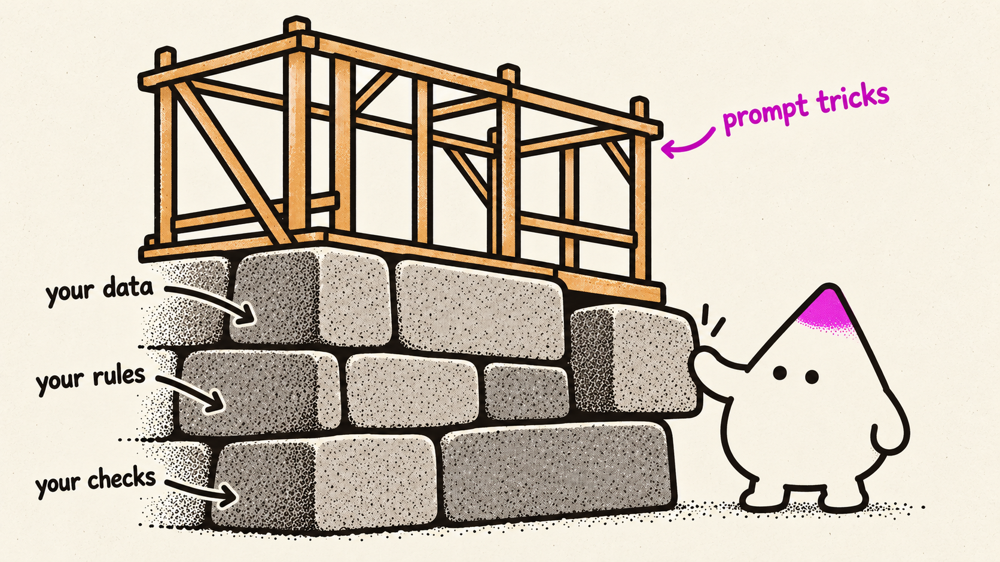
The harness manages it. Same model, better harness: 6.5% to 31%.
Write the checks your experts already do in their heads.
If the AI might guess it, put it in code.